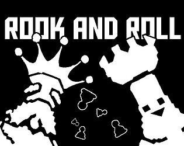

Rook and roll
Rook and roll est un jeu d'action en 2D dans lequel vous prenez le contrôle d'une tour d'échecs qui
a pour mission d'escorter le roi en lieu sûr. Des pions adverses bloquent votre chemin, et c'est à vous de les éliminer en avançant
rapidement. Plus votre vitesse est élevée, plus l'impact est fort, ce qui vous permet de dégager la voie et de défendre le roi.
Ce projet a été développé entièrement seul.
